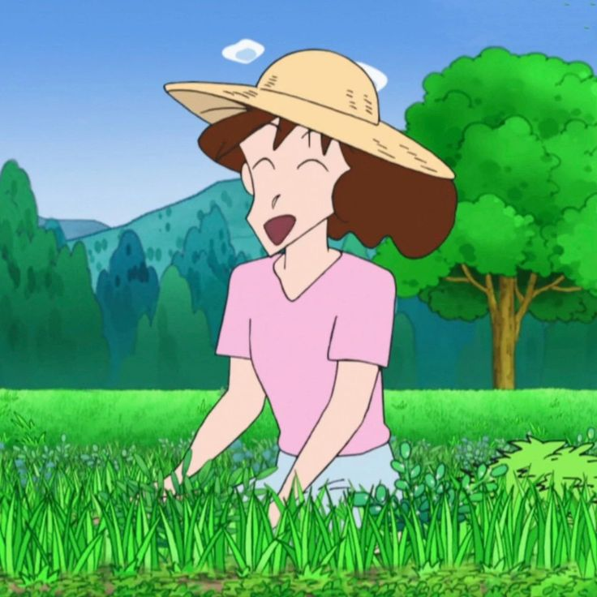
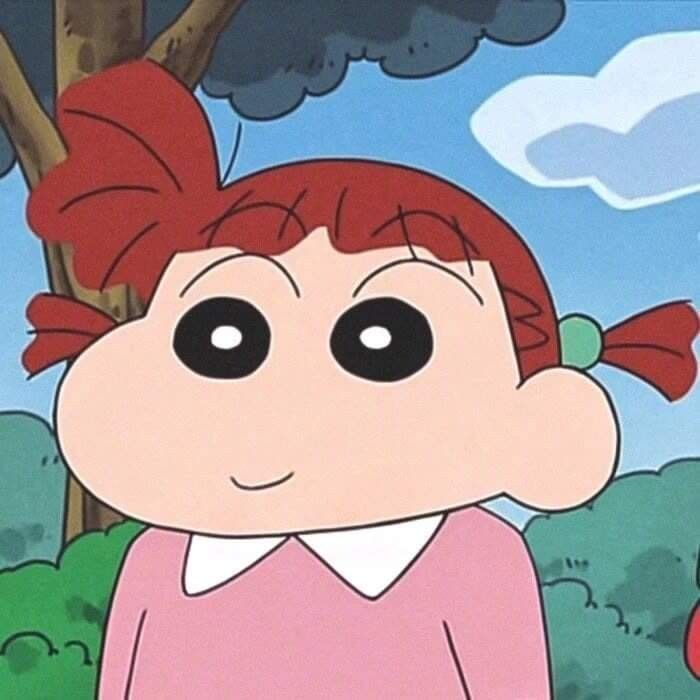
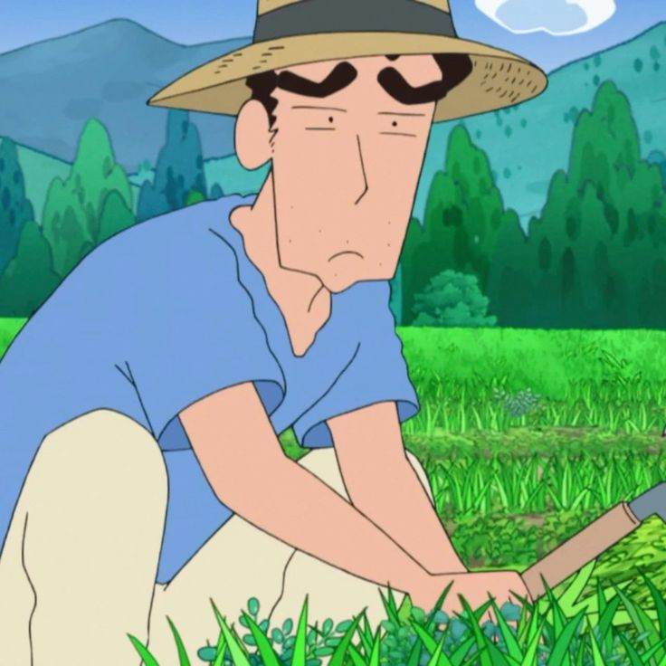

Shin Chan 🇯🇵
1990-2023
1,200+ Episodes
⭐ 8.5/10
"Buri buri zu zu zu!"
Nostalgic cartoon theme song!
About Shin Chan
5-year-old Shin-chan from Kasukabe lives for Action Kamen, butt dances, and causing chaos! With his wild imagination and naughty antics, he drives his family crazy while making us laugh endlessly. A true 90s legend!
🎬 Kazama Singing Theme Song
Shin-chan funny moments with friends! Classic nostalgia!
Main Characters
Shin-chan
Butt dance king & Action Kamen fan!

Misae
Shin-chan's mother and a classical housewife

Action Kamen
Shin-chan's superhero idol!

Nene-chan
The dramatic kindergarten queen!

Hiroshi (Papa)
Always tired salaryman dad!
🌟 Why We Miss It
- Shin-chan's butt dance became worldwide meme material
- Action Kamen references everywhere in 90s India
- Misa-chan love stories = pure comedy gold
- Kindergarten fights were too relatable
- Over 1,200 episodes of childhood memories
📺 Must-Watch Episodes
Action Kamen Forever!
Shin-chan becomes Action Kamen for Halloween
Elephant Dance Disaster
Shin-chan's dance goes viral at school festival
Misa-chan's Birthday
Chaos at crush's birthday celebration
💬 Legendary Quotes
"Buri buri zu zu zu!"
"Action Kamen da ze!"
"Misa-chan, marry me!"
🧠 Did You Know?
- Shin-chan was banned in some countries for "naughty behavior"
- Butt dance inspired real dance moves worldwide
- 1200+ episodes = most episodes of any cartoon
- Action Kamen has his own manga series
- Shin-chan movie grossed $40M in Japan